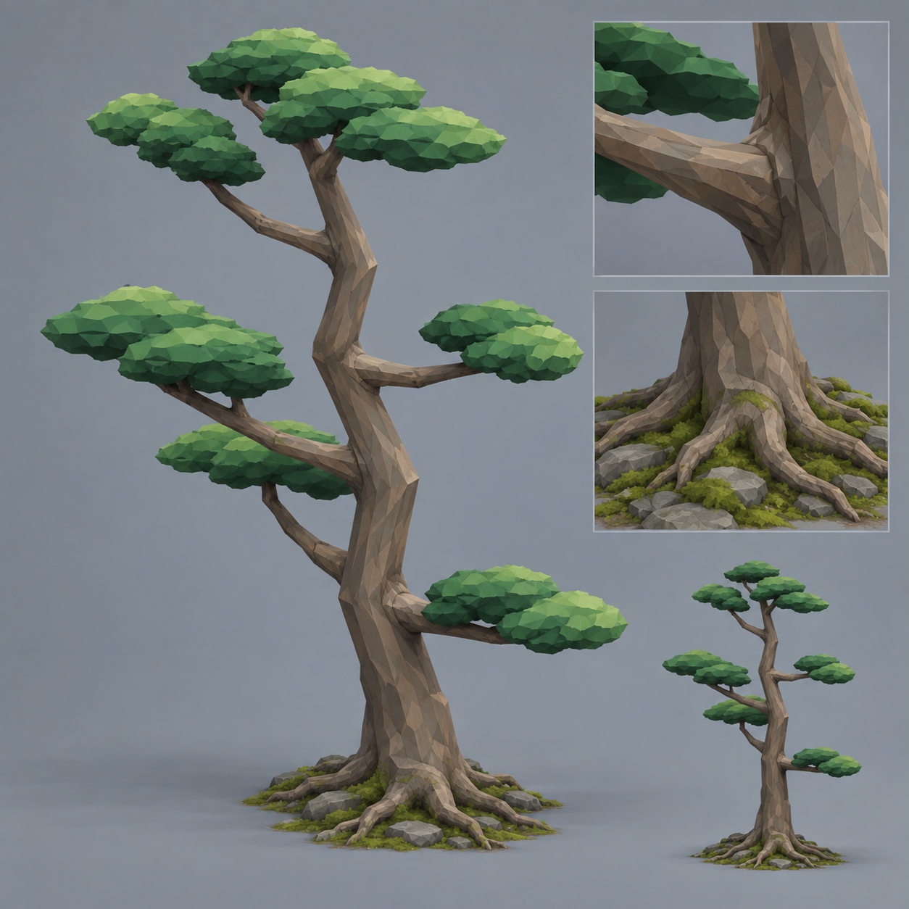
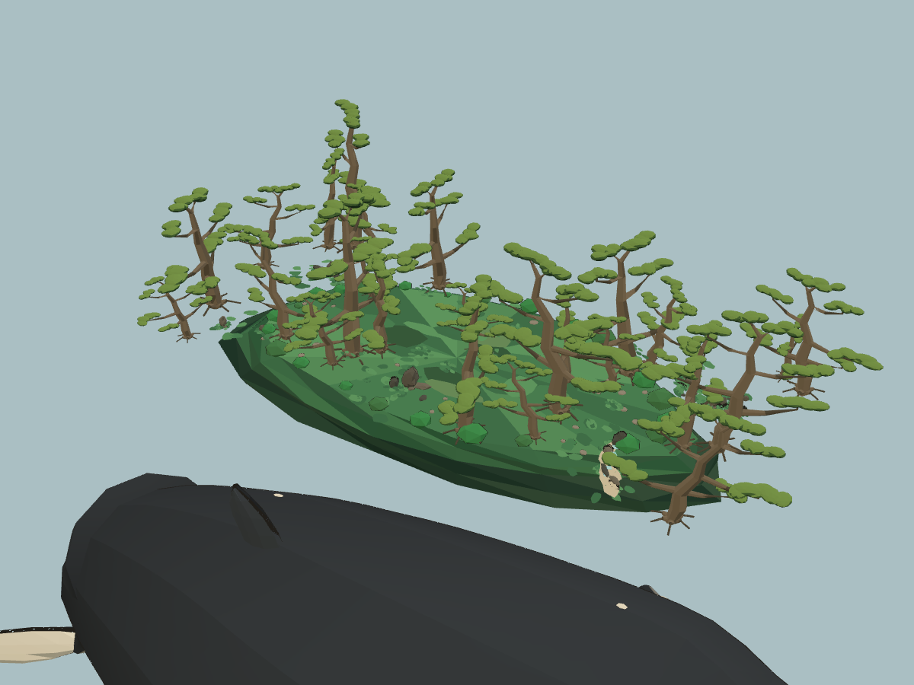
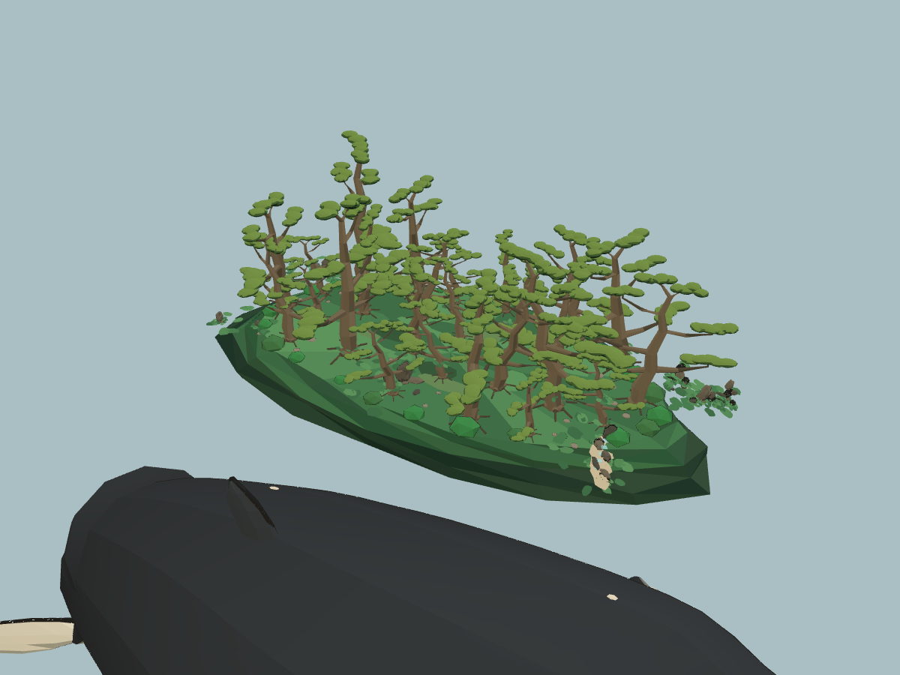

苔庭松林 · 鲲背实际布局
造型尚未验收：当前展示的是已有 Blender v1 候选的网页接入与鲸背布局调整；本轮尚未重新雕改树形。目标要求更厚的云冠、更连贯粗粝的枝干和贴地根盘，正在制作真正的 Blender v2 对照。
原来认可的目标图

当前 v1 候选近景
 叶冠仍偏薄、树皮与根盘仍过简；布局检查通过不代表美术达到目标。
叶冠仍偏薄、树皮与根盘仍过简；布局检查通过不代表美术达到目标。正在读取实际场景验证报告。
同新模型 · 原位置

只恢复树根旧位置；模型与缩放、光照相同。这张用于比较集中程度，不是完整旧游戏截图。当前分散位置

实际 saihojiGarden 场景模块，25株原种子模型。场景处于平时埋鲸状态；本独立预览未加载球体遮挡，能看到地下鲸身。林下近景
真实地形支持、独立冠下射线、逐树位置和来源见检查报告。本页不代表完整伏击、人物通行和战争流程验收。
单株目标与模型对照